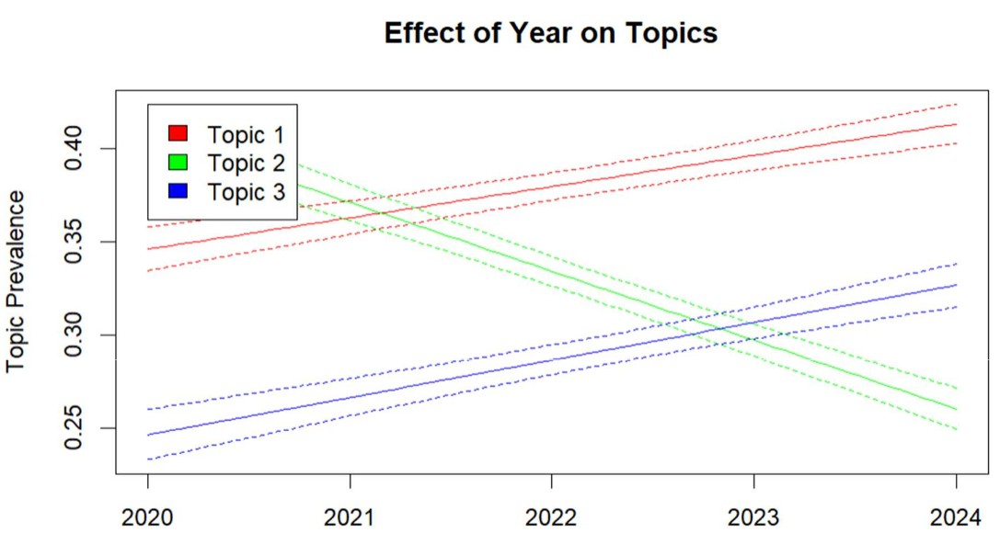
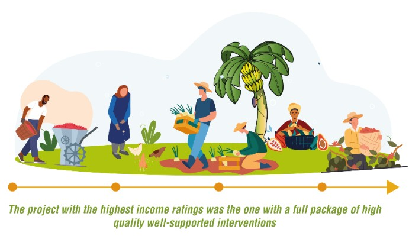

Jackie Garcia-Yi
Data Scientist and AI | Sustainability Expert | Bio-Acoustic Monitoring

About Me
Dynamic data scientist with nearly 20 years of international experience, specialized in environment, rural development, and climate change. My career spans the United Nations (UNEP, UNODC) and German academia, where I focus on climate change mitigation, impact assessment, and the application of advanced data analytics to sustainable development.
I have overseen multi-million-dollar initiatives, led cross-functional teams, and delivered data-driven insights that inform global policy and programming.
I develop predictive models, design AI-driven tools, and build intelligent systems—from scalable reporting pipelines to LLM-powered agents—that extract meaning from complex datasets. My work enables organizations to automate analysis, enhance decision-making, and apply cutting-edge data science to real-world sustainability challenges.
Data Science Projects
(In Conceptualization) Strengthening Climate Resilience through Forest-Based Risk Reduction in Peru
This project aims to enhance disaster and climate resilience in Peru’s Yanachaga-Chemillén National Park (YChNP) and surrounding communities by protecting forest ecosystems that naturally reduce landslide and flood risks. Leveraging AI-powered Aurora weather forecasts and Sentinel satellite data, it identifies and monitors critical forest areas, integrates risk and ecosystem data into an interactive dashboard and app, and supports early warning, policy engagement, and community training. By recognizing forests as vital infrastructure, the project links conservation with disaster risk reduction, providing a scalable model for other Andean-Amazon regions.
Multimodal AI for Acoustic Bird Species Identification in Support of Ecotourism and Conservation
This project develops an innovative app that harnesses multimodal AI to support ecotourism and biodiversity conservation in remote, species-rich areas. The app:
- Identifies bird species from audio using a hybrid BirdNET-based model
- Recognizes local and endemic species via our own custom transfer learning model
- Provides a biodiversity assistant powered by an agentic Large Language Model (LLM)
- Offers educational tools including local species sound libraries and interactive photo galleries
- Visualizes biodiversity patterns through ecological maps using remote sensing data
- Runs on scalable cloud infrastructure for high availability and performance
Time Series Prediction of Outbreak of Infectious Diseases

This project explores the policy potential of predictive modeling for infectious disease outbreaks using time series methods, including SMA, ARMA, RNN, and LSTM models. We leveraged digital stream data, particularly Google search trends. Deep learning models outperformed traditional baselines in forecasting COVID-19 cases. Accurate outbreak prediction can empower governments to act swiftly, implement targeted interventions, and avoid unnecessary lockdowns.
Impact of COVID on Education
This project examines the impact of COVID-19 on global primary education completion rates using regression models such as Linear, Lasso, k-NN, and Adaboost. Using UNESCO and World Bank data, it estimates 2020 outcomes without the pandemic and compares them to actual values. Adaboost showed the highest accuracy (R² = 0.81).
Reports
NLP for UN Biodiversity Speeches
Applies Structural Topic Modeling and NLP to over 5,000 pages of UN biodiversity policy speeches. The analysis identifies key thematic shifts and regional discourse variation between 1994 and 2024 conferences.
Sustainable Income from Alternative Development
This report shows that effective alternative development (AD) initiatives reduce reliance on illicit crop cultivation by improving rural livelihoods through integrated support—such as cash assistance, food security, market access, and training. These measures often boost incomes, particularly for women and vulnerable groups, while helping to reduce inequality.
UN World Drug Report. In Focus: Alternative Development
The UN World Drug Report spotlights "Alternative Development" as a long-term strategy to address illicit crop cultivation. Drawing on data from 53 projects, it highlights both successes and challenges, stressing sustainable investments and rigorous monitoring.
Strategic Maps for Decision-Making

This research models opium poppy cultivation likelihood across Afghanistan using spatial econometrics. Findings highlight key factors such as inaccessibility, rural population size, and climatic variables while debunking some commonly assumed drivers.
Remote Sensing for Poppy Detection
This report evaluates the use of Landsat 8 imagery for identifying opium poppy crops in Afghanistan. Challenges included pixel resolution, similar NDVI patterns across crops, and elevation-driven calendar variations.
Global Overview of Alternative Development Projects
Alternative development (AD) offers a sustainable solution by improving rural livelihoods, but limited coordination, weak data, and short project durations hinder impact. From 2013–2017, 53 AD projects aimed to reach 550,000 households, with most funding going to long-term efforts.
Development Barriers in Opium Poppy-Growing Villages in Shan State, Myanmar

This report highlights how opium poppy cultivation persists in underdeveloped, isolated regions of Shan State, especially East and North Shan in Myanmar. These areas face poor infrastructure, weak governance, and greater environmental strain. Although declining opium prices create momentum for change, many farmers remain vulnerable due to food insecurity and limited livelihood options. Effective policy must combine infrastructure and market access with law enforcement and sustainable development, backed by international support and locally informed strategies.
Understanding the Development Challenges of Opium Poppy Cultivation in Afghanistan
This report examines the complex relationship between opium poppy cultivation and sustainable development in Afghanistan, where cultivation rose to 201,000 hectares in 2016, producing 4,800 tons of opium.
Socio-Economics of Opium Poppy Cultivation in Shan State, Myanmar
This report analyzes survey data from 591 villages in Shan State, revealing a decline in opium poppy cultivation participation but an increase in average cultivation area per household. Poppy-growing villages face higher living costs, poor infrastructure, and limited access to healthcare and markets, especially in East and North Shan. South Shan shows better conditions, with cultivation often driven by income opportunities rather than subsistence. The findings underscore the need for tailored, region-specific development policies that go beyond crop eradication.
List of Other Reports on Monitoring of Illicit Crops (UNODC, 2015-2020):
- Illicit Crop Cultivation Bolivia 2020
- Illicit Crop Cultivation Colombia 2020
- Illicit Crop Cultivation Bolivia 2019
- Illicit Crop Cultivation Colombia 2019
- Illicit Crop Cultivation Bolivia 2018
- Illicit Crop Cultivation Bolivia 2017
- Illicit Crop Cultivation Myanmar 2017
- Illicit Crop Cultivation Peru 2017
- Illicit Crop Cultivation Afghanistan 2016
- Illicit Crop Cultivation Bolivia 2016
- Illicit Crop Cultivation Colombia 2016
- Illicit Crop Cultivation Peru 2016
- Illicit Crop Cultivation Bolivia 2015
- Illicit Crop Cultivation Colombia 2015
- Illicit Crop Cultivation Peru 2015
More Information
Contact Information
Email: jackiegarciayi@gmail.com
Phone/WhatsApp: +43-6701889288